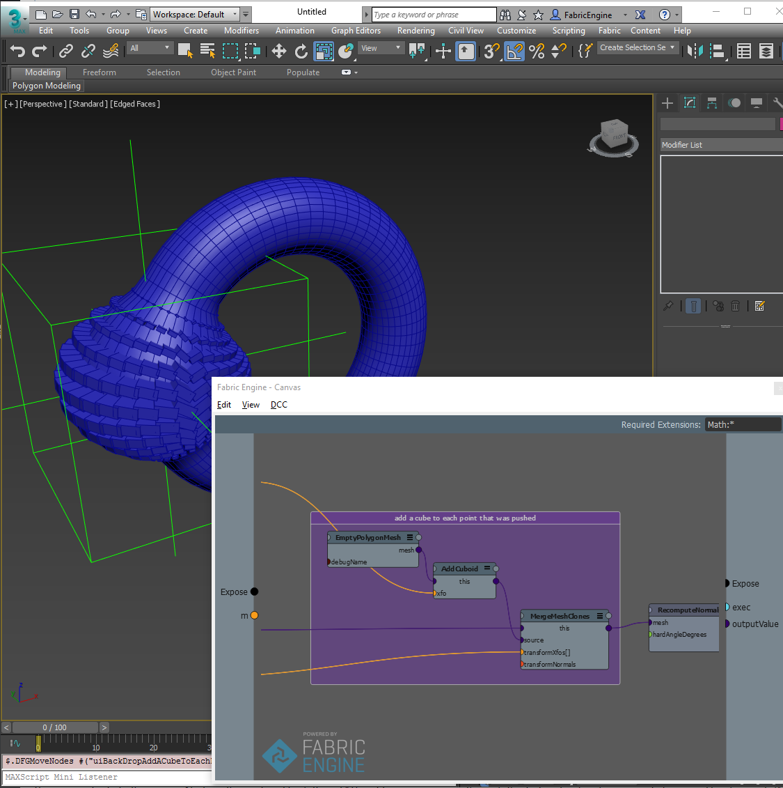
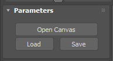
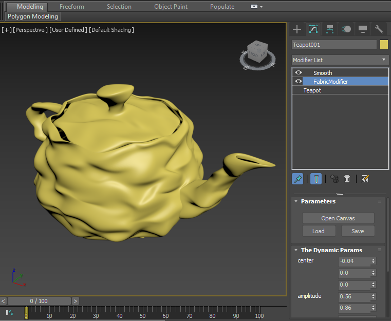
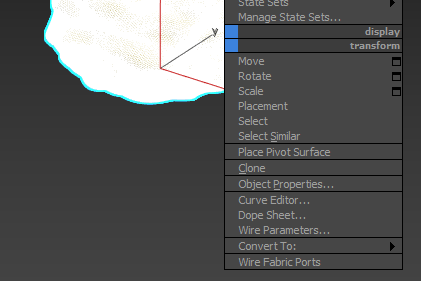

Canvas inside of 3ds Max¶
Fabric Menu¶

The Fabric menu exposes the actions to enable the Fabric native rendering in the 3ds Max viewport (it will only work when the viewport driver is set to OpenGL) and the Manipulation system.
Canvas Node Types¶
Fabric for 3ds Max comes with three main nodes: a Geometry node (Fabric Mesh), a deformer modifier (Fabric Modifier and Fabric WSModifier) and a transform controller (Fabric Transform). There are some common operations to all these nodes:
Opening the canvas editor, loading and saving graphs
Fabric Mesh¶

Fabric Mesh primitive is meant to output procedural geometry
The Fabric Mesh has a predefined PolygonMesh outputValue out port where the geometry computations should go.
注釈
Currently, only geometric basic channels are exported (positions and uvs).
Fabric Modifier¶
The Fabric Modifier has a predefined PolygonMesh baseMesh in port.
Similar to the Fabric Mesh it also has a PolygonMesh outputValue out port where the output of the deformation should go.
There is also a World space Modifier (Fabric WSModifier) which has a World Space Mat44 baseMeshTransform in port.
Fabric Transform¶

The Fabric Transform has a Mat44 parentValue in port that has the parent Matrix of the object and outputs a Mat44 outputValue.
There are also Fabric Position and Fabric Rotation controllers.
If you need even more fine-grained control of the transform you can also rely on the Fabric Float controller.
Adding ports / parameters¶

Exposed ports will appear in The Dynamic Params section of the Fabric node. These parameters act as normal 3ds Max parameters and can be animated, wired etc...
For exposed ports, in the EditPort dialog, you can also set a 3ds max type equivalent for your port value. For example, if your input is a Mat44, you can set the input to either be Matrix3 (with no UI) or MaxNode. With MaxNode, you could hook a node directly into that port to set it’s transform. See some of the samples that make use of this functionality.

注釈
Exposed Array ports are only supported via MaxScript.
Wiring Fabric outputs¶
Fabric allows to output an arbitrary number of output values. To be able to easily connect this outputs to other Fabric node inputs, Fabric for 3ds Max exposes a Wire Fabric Ports quad menu action that you can access by right clicking in an object. The workflow is identical to wiring a parameter. You select the out parameter in the input object, then click on the destination object and select the port you want to connect to. This connectivity happens outside 3ds Max so it is not visible in the Dope Sheet.
Real-time Rendering¶
You can draw into 3ds Max viewport directly from Canvas. For this you can use the EmptyDrawingHandle node and consecutive nodes such as DrawingHandle.DrawPolygonMesh. Please see the InlineDrawing Canvas sample scenes for examples of this.
注釈
This feature requires the viewport driver to be set to OpenGL.
Maxscript support¶
Fabric for 3ds Max has full Maxscript support. Enable the MacroRecorder to get a list of the generated commands. You can refer to the samples folder inside the plugin for a list of unit tests using the Maxscripting capabilities.